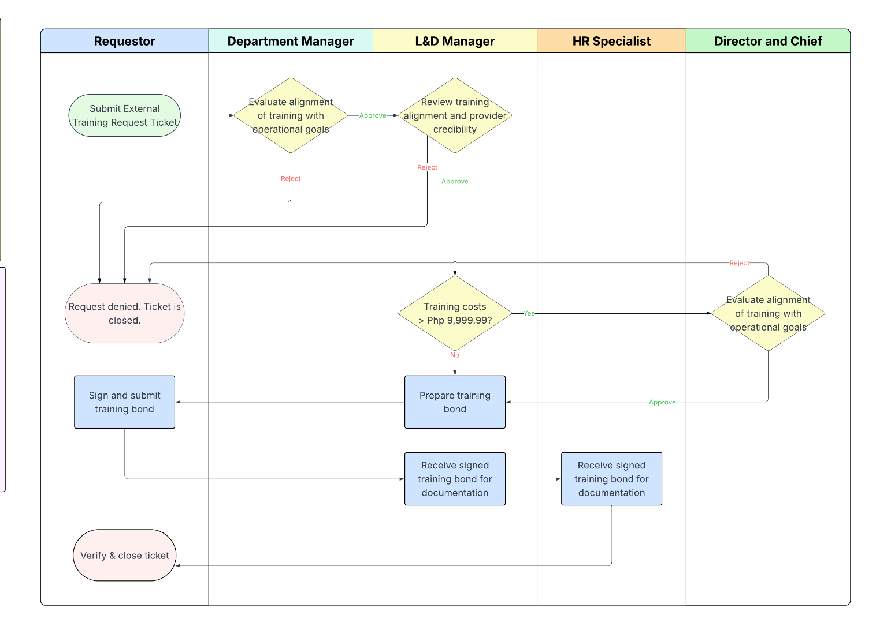

To establish a standardized process for requesting, evaluating, and approving external training programs, ensuring alignment with business goals, budget availability, operational requirements, and training impact.
To establish a standardized process for requesting, evaluating, and approving external training programs, ensuring alignment with business goals, budget availability, operational requirements, and training impact.
This SOP covers:
This SOP does not cover:
The process begins upon the employee's submission of a completed Training Request in the Requests, Incidents, & Change Assistant (RICA) Helpdesk.
The process concludes when the request is rejected or, for approved requests, a training agreement has been signed and filed.
| Activity | R | A | S | C | I |
|---|---|---|---|---|---|
| Ticket Submission | Requesting Employee | Immediate Supervisor | Department Head | ||
| Manager Approval | Department Manager | Immediate Supervisor | Requesting Employee | Department Head/L&D Director | |
| L&D Assessment | L&D Manager | — | Immediate Supervisor, L&D Director | Department head | |
| Final Approval | Director, Chief | — | Department Manager | Department Manager, Requesting Employee | |
| Signing of Training Bond | Requesting Employee/L&D Director | Requesting Employee | L&D Manager, L&D Director | Finance | HR Manager, Department Manager, Director, Chief |

Figure 1 — External Training Request Process Flow
Employee creates a training request ticket in RICA Helpdesk at least 30 working days prior to the enrollment date. Required ticket details:
As an optional support tool, the employee may use the Training Request Assessor GPT to help assess the request, determine approvals, bond requirements, and summarize employee impact. Use of this tool is optional and for guidance only. All evaluations, approvals, and decisions remain subject to the formal review process defined in the External Training Policy.
Manager reviews the ticket and evaluates:
Manager updates ticket within 3 working days from submission with a recommendation:
Additional information may be needed to justify the request. In this case, these may be provided in the ticket comments and attachments section.
L&D reviews and documents in the ticket:
L&D provides recommendations within 10 working days and routes the ticket forward.
Additional information may be needed to justify the request. In this case, these may be provided in the ticket comments and attachments section.
The Director and Chief review all inputs within the ticket.
Final approval shall follow the Approval matrix below:
| Training Cost | Director | Chief |
|---|---|---|
| Php 10,000.00 – 49,999.99 | Yes | No |
| Php 50,000.00 – 99,999.99 | Yes | |
| Php 100,000.00 and above | Yes | |
The Director and Chief provide a decision within 5 working days. The decision is recorded in the system:
Additional information may be needed to justify the request, as well as conditional approvals, such as budget adjustments and rescheduling. These may be provided in the ticket comments and attachments section.
L&D Manager prepares the training bond.
Requestor signs the training bond and is attached to the ticket.
HR and L&D acknowledge the signed training bond.
Employee verifies and closes the ticket. After closing the ticket, the employee must file a new ticket for funding or payment request following Finance's Policy and SOPs.
The following KPI is established to monitor the efficiency, effectiveness, and compliance of the External Training Request process. These metrics align with the SOP objective of ensuring timely, well-evaluated, and strategically aligned training decisions.
| KPI / Metric | Target | Frequency | Responsible | Monitoring Tool |
|---|---|---|---|---|
| On-time Processing Rate (requests completed within SLA) | ≥ 90% | Quarterly | L&D | RICA Helpdesk reports |
Failure to meet defined KPI targets may indicate inefficiencies in the process or gaps in adherence to the SOP. Responsible parties shall be required to participate in corrective actions, including process reviews, retraining, or workflow adjustments.
Requests not processed through the RICA Helpdesk or not following the prescribed procedure may be denied or not funded. Repeated non-compliance may result in escalation to management and may be subject to disciplinary action in accordance with company policies.
The L&D manager is responsible for the maintenance and updates of this SOP, in coordination with HR and relevant stakeholders. This SOP shall be reviewed annually to ensure continued relevance and alignment with organizational requirements. Changes in organizational structure, approval authority, related policies, ticketing systems, recurring KPI gaps, or audit findings may trigger unscheduled reviews. All updates must be properly approved, documented, and communicated, with the latest version maintained in the official document repository.
| Version | Author | Date | Summary of Change(s) |
|---|---|---|---|
| 1.0 | Joseph San Jose | April 17, 2026 | Created the first version |